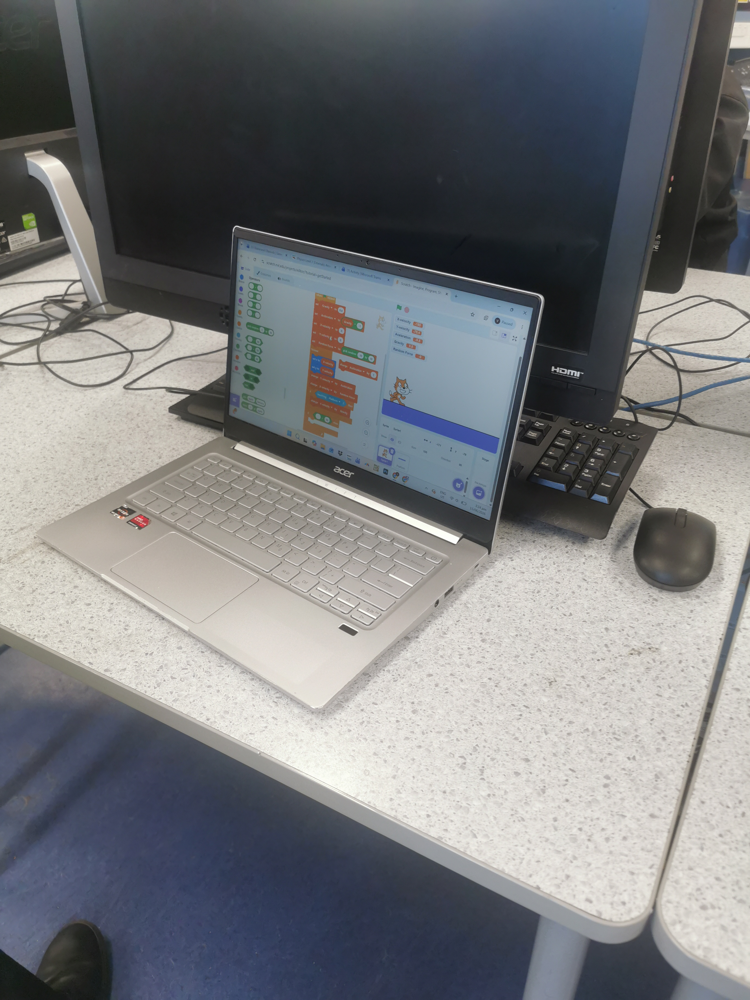
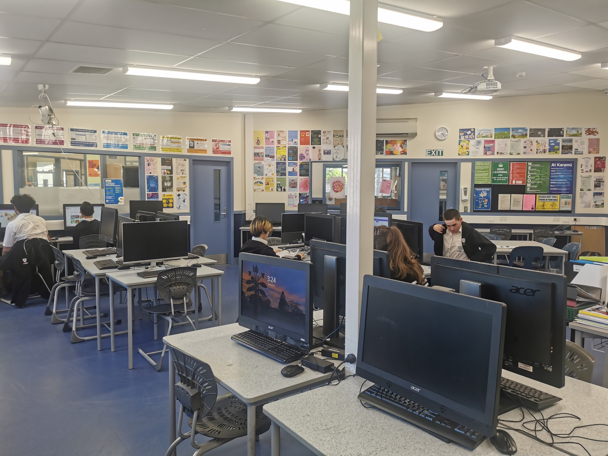

What is Coding Club?
Coding Club like its name suggests is a school club that focuses its learning and development on digital skills, for example coding and robotics which are two different subjects taught at coding club. Students than use the skills they learned in upcoming events.

What do we learn from Coding Club?
Coding Club teaches different year group different skills, for example juniors are learning coding languages such as block coding which involve coding websites like scratch and code.org. Seniors on the other hand are learning text based coding like Javascript and python, this is important because we are teaching both groups different skills to prepare them for future competitions in 2027 and the scratch competition currently happening in 2026.

Who can help us in Coding Club
Staff and Year 13's have the most experience for coding so if you are struggling to do coding ask them for help.

write about staff
Coding Club helps students develop teamwork, creativity, and technical skills while preparing for competitions.